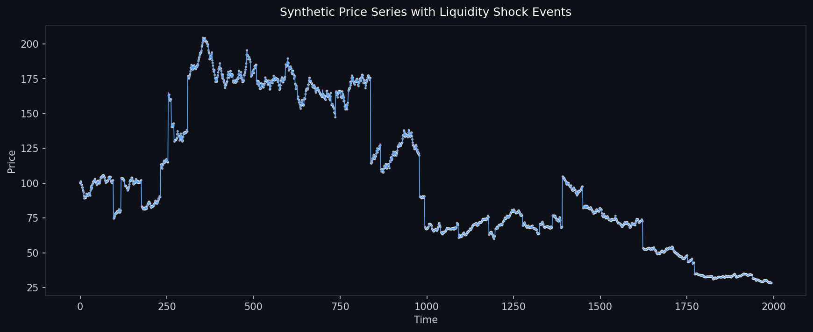

Machine Learning + Quant Finance
Quant Research Visual Showcase
Explore three premium dashboard collections generated from synthetic market simulations. Each section includes high-quality plots for modeling, diagnostics, and institutional-style analysis.
3Projects
16Total Charts
100%Synthetic Data
PythonML + Visualization Stack

1. Liquidity Shock Simulator
Market microstructure stress modeling with spread expansion, execution pressure, and volatility shock diagnostics.
6 charts available

2. Neural Regime Detection Engine
Regime classification dashboard using GMM, confidence mapping, transition heatmaps, and 3D volatility surfaces.
3 charts available

3. Multi-Factor Alpha Explorer
Factor relationship analytics with feature importance, strategy diagnostics, alpha Monte Carlo, and signal mapping.
7 charts available